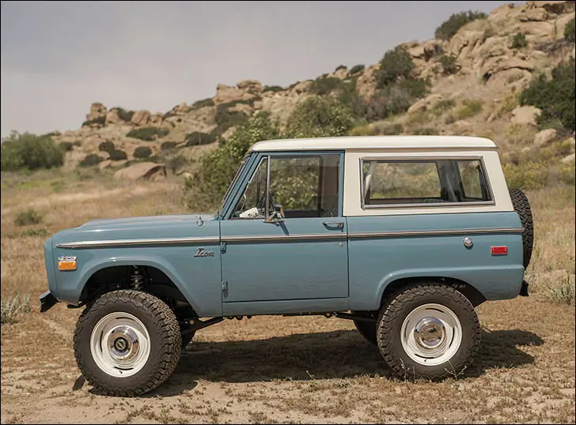
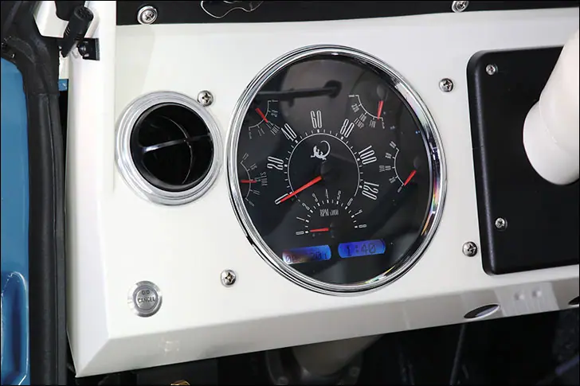
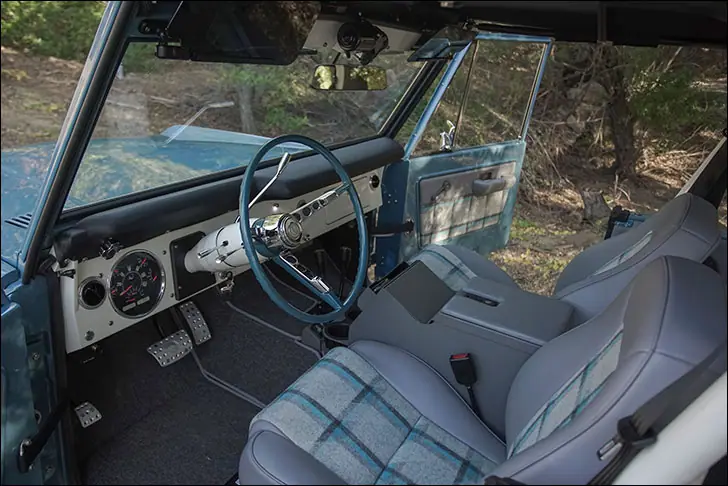
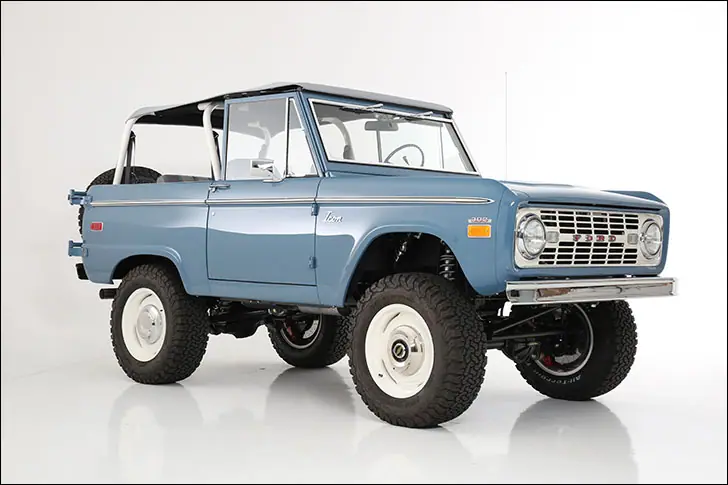
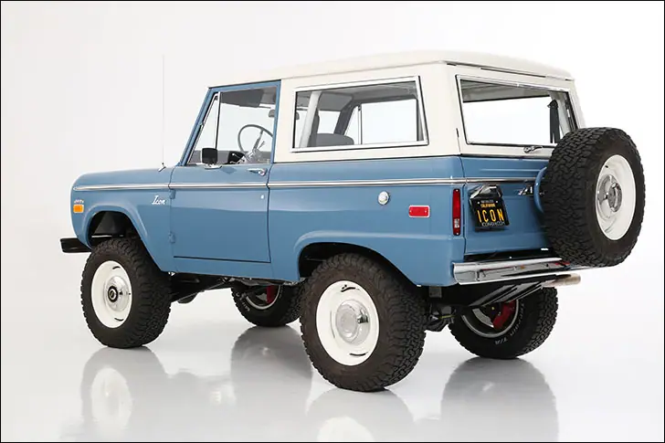

ICON '66-67 Bronco


Iconic Stallion
Setting of the curve
ICON 4x4 has really lived up to the name. Since releasing their first Bronco nearly a decade ago, the early Bronco segment has been growing rapidly, spawning many imitators to the ICON style. Clean cut with thoughtful touches and excellent craftsmanship. Next time you take in the Parade of Homes, see if you can tell which contractors selected their own finishes and hardware, and which ones used a legit designer. The same stark difference is obvious when comparing other shops’ custom vehicles to one from ICON. Jonathan Ward’s eye for detail is evident in everything he touches.
Just take a look at this Old School Bronco, among the latest from the ICON workshop. At a glance, it’s a super clean ’66-7 Bronco on some large-diameter steelies. Keep looking ever closer, and you’ll see the perfectly detailed suspension, complete with coil overs front and rear, along with big disc brakes on each corner. The wheels are billet aluminum pieces, machined by ICON to be larger and lighter than the stock rollers, while the 18” rubber is sourced from BFGoodrich. The roll cage is the real deal, with gussets in the corners for all the fun you can think of. There are several tops available; a white bikini or hardtop for the days you don’t want to let it all hang out.

Under the hood, Jonathan spec’d Coyote power from Ford. Despite the 5.0 being half a century newer than the truck itself, ICON was able to mesh the two worlds together, and the high tech engine cover lives happily next to the vintage coolant overflow bag. The Wilwood master cylinder and giant aluminum radiator look right at home in the classic tin.
Inside the cab, the stock dash was retained and updated with a few new holes for round AC vents. To the left of the column, yes that’s where Ford put the speedo, you’ll find a Dakota Digital instrument system with an interesting gauge face. At a glance it looks like a stock cluster, or possibly the new RTX series, but in fact it’s the tried-and-true VHX version with an ICON-designed overlay. As a designer, Jonathan Ward can’t leave anything alone, and we were happy to lend a hand making his vision a reality. The upholstery is grey leather with plaid inserts, no doubt a nod to the ‘60s. The billet pedals and tilt column are more modern touches that keep things interesting, as is the double-DIN navigation/backup camera/stereo housed in the aluminum center console.

Everything coming out of ICON’s Los Angeles facility takes elements of the factory designs and seamlessly integrates modern components. There’s nothing that looks like an afterthought. The overwhelming theme that comes to mind is “OEM.” It all fits together in such a way that you’d swear it came that way in the first place. Small details like aluminum tie-down rings and a 12V power source in the back make the ICON Bronco a totally usable vehicle with a factory feel, even if it is a custom built rig through and through.
To be iconic is to be looked upon with admiration, to be timeless and respected. Judging by the spike in popularity of 1966-77 Ford Broncos, especially those with modern overtones, it’s safe to say that ICON 4x4 is an apt name for Jonathan Ward’s company. Of course, now that the rest for the world has caught on to his winning formula, we shouldn’t be surprised to see the Old School Bronco make an appearance. Let me know how many OE-styled Broncos you see pop up in the next few years. Jonathan Ward isn’t worried; he’s already planning phase three.

Also on dakotadigital.com.